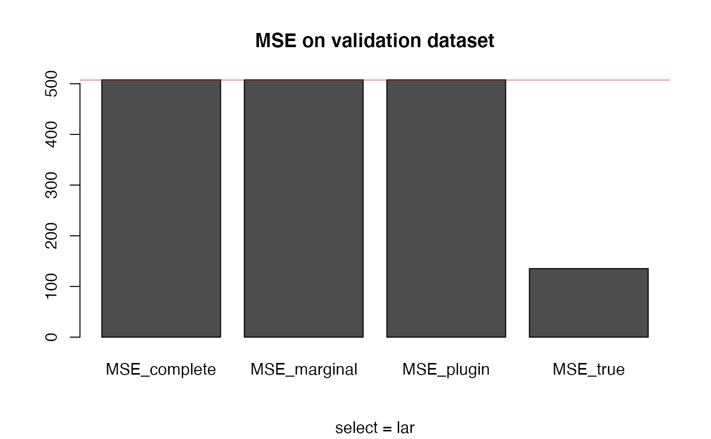

Computes three regression models: Complete (regression on the wole dataset X), marginal (regression using only independant covariates: X[,colSums(Z)==0]) and plug-in (sequential regression based on the marginal model and then use redundant covariates by plug-in,
with a regression on the residuals of the marginal model by the residuals of the sub-regressions). Each regression can be computed with variable selection (for example the lasso).
correg( X = NULL, Y = NULL, Z = NULL, B = NULL, compl = TRUE, expl = FALSE, pred = FALSE, select = c("lar", "lasso", "forward.stagewise", "stepwise", "elasticnet", "NULL", "ridge", "clere", "spikeslab"), criterion = c("MSE", "BIC"), X_test = NULL, Y_test = NULL, intercept = TRUE, K = 10, groupe = NULL, Amax = NULL, lambda = 1, alpha = NULL, g = 5 )
| X | The data matrix (covariates) without the intercept |
|---|---|
| Y | The response variable vector |
| Z | The structure (adjacency matrix) between the covariates |
| B | The (d+1)xd matrix associated to Z and that contains the parameters of the sub-regressions |
| compl | (boolean) to decide if the complete modele is computed |
| expl | (boolean) to decide if the explicative model is in the output |
| pred | (boolean) to decide if the predictive model is computed |
| select | selection method in ("lar","lasso","forward.stagewise","stepwise", "elasticnet", "NULL","ridge","clere","spikeslab") |
| criterion | the criterion used to compare the models |
| X_test | validation sample |
| Y_test | response for the validation sample |
| intercept | boolean. If FALSE intercept will be set to 0 in each model. |
| K | the number of clusters for cross-validation |
| groupe | a vector of integer to define the groups used for cross-validation (to obtain a reproductible result) |
| Amax | the maximum number of non-zero coefficients in the final model |
| lambda | (optional) parameter for elasticnet or ridge (quadratic penalty) if select="elasticnet" or "ridge". |
| alpha | Coefficients of the explicative model to coerce the predictive step. if not NULL explicative step is not computed. |
| g | (optional) number of group of variables for clere if select="clere" |
a list that contains:
Results associated to the regression on X
Results associated to the marginal regression on explicative covariates (defined by colSums(Z)==0)
Results associated to the plug-in regression model.
Vector of the regression coefficients (the first is the intercept).(also have expl$A and pred$A)
BIC criterion associated to the model (also have expl$A and pred$A)
AIC criterion associated to the model (also have expl$A)
Cross-validated MSE associated to the model (also have expl$A)
# dataset generation base = mixture_generator(n = 15, p = 10, ratio = 0.4, tp1 = 1, tp2 = 1, tp3 = 1, positive = 0.5, R2Y = 0.8, R2 = 0.9, scale = TRUE, max_compl = 3, lambda = 1) X_appr = base$X_appr # learning sample Y_appr = base$Y_appr # response variable for the learning sample Y_test = base$Y_test # responsee variable for the validation sample X_test = base$X_test # validation sample TrueZ = base$Z # True generative structure (binary adjacency matrix) # Regression coefficients estimation select = "lar" # variable selection with lasso (using lar algorithm) resY = correg(X = X_appr, Y = Y_appr, Z = TrueZ, compl = TRUE, expl = TRUE, pred = TRUE, select = select, K = 10) # MSE computation MSE_complete = MSE_loc(Y = Y_test, X = X_test, A = resY$compl$A) # classical model on X MSE_marginal = MSE_loc(Y = Y_test, X = X_test, A = resY$expl$A) # reduced model without correlations MSE_plugin = MSE_loc(Y = Y_test, X = X_test, A = resY$pred$A) # plug-in model MSE_true = MSE_loc(Y = Y_test, X = X_test, A = base$A) # True model # MSE comparison MSE = data.frame(MSE_complete, MSE_marginal, MSE_plugin, MSE_true) MSE # estimated structure#> MSE_complete MSE_marginal MSE_plugin MSE_true #> 1 507.7113 507.7113 507.7113 135.2856